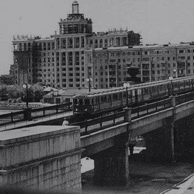

ПЕРВЫЙ МЕТРОМОСТ
Смоле́нский метромо́ст в Москве — однопролётный стальной арочный
метромост через Москву-реку, расположенный между станциями
«Смоленская» и «Киевская» Филёвской линии Московского метрополитена.
Является старейшим метромостом в России.
Движение поездов до станции
«Киевская»
открыто 20 марта 1937 года.